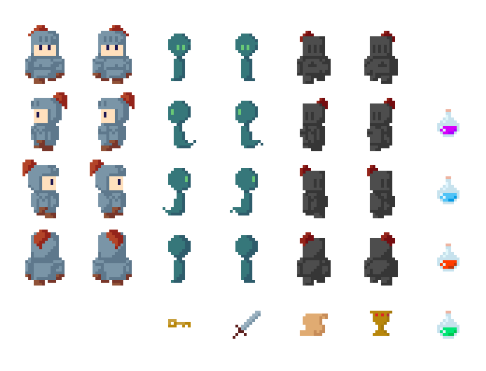
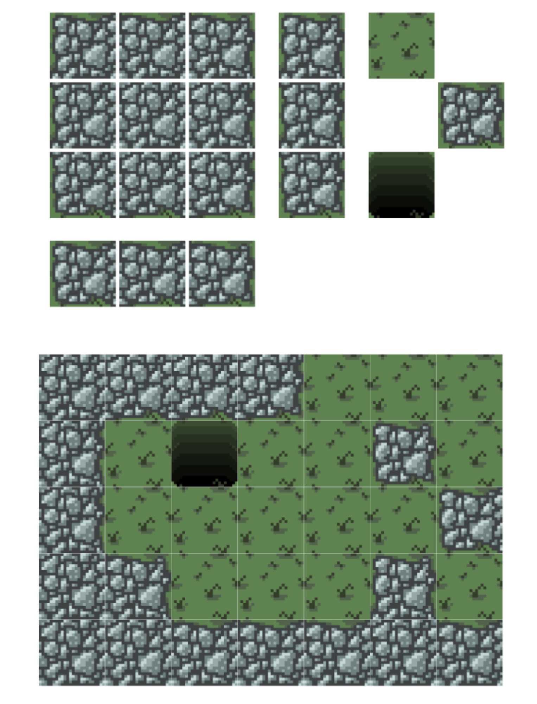
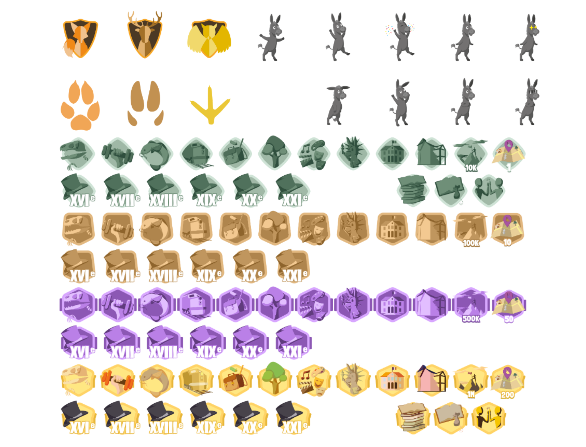

Artistique
Curseur

Dans le cadre d'un cours artistique, nous avaons dû créer un curseur en pixelart. Le choix de sa signifiaction ou de son utilisation était libre. J'ai pour ma part représenter une souris, trouvant le parallèle avec la souris de l'ordinateur amusante. Bon qu'il ne faille rendre qu'une version de ce curseur, j'ai choisi de le deriver dans les defférentes apparences afin de l'utiliser sur mon appareil. Certaines images sont les frames d'un gif qui correspond au travail en arrière plan.
Jeu MapDigger
Dans le cadre d'un projet de jeu vidéo lors du deuxime trimestre en IMAC, j'ai réalisé diverses éléments visuels en pixelart. Avec mon équipe, nous avons décidé de nous baser sur un aspect médival, rappelant les chevaliers des légendes Arthuriennes. J'ai notamment dessiner les personnages : le joueur et deux ennemis, ainsi que des objets à récolter. Les personnages ont été pensé pour s'animer lors de leur déplacement en un gif de 2 frames.


En plus des personnages, je me suis également chargé des textures de l'environnment, créant des tuiles qui forment un terrain avec des limites et parfois des pièges. Malheuresement, en raison d'un manque de temps et de compétences en gestion du rendu des textures, celles sont n'ont jamais put être implémentées correctement dans notre jeu. Malgré cela, j'ai l'ambition d'un jour faire un projet similaire par moi même et ainsi prendre ma revanche sur ce projet qui reste l'un de mes plus gros regrets en IMAC.
Quitcho

En deuxième année d'IMAC, nous avons réalisé un projet d'appplication. Il s'agit d'une application d'apprentissage ludique qui permet de découvrir le patrimoine de l'agglomération PAris Vallée de la Marne. Ce projet était en partenariat avec les 14 médiathèques de l'agglomération. Ce jeu de géo catching à été coder par trois membres de mon équipe tandis que je me concentrais sur la création d'éléments graphiques. J'ai notamment réalisé 21 dessins originaux pour faire des badges à récupérer dans le jeu.